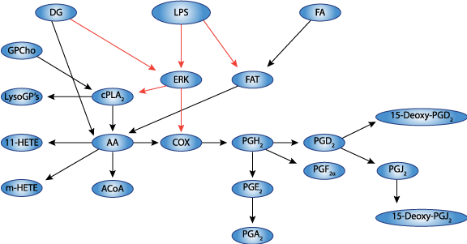

This CellML model runs in COR and OpenCell and the units are consistent throughout. It reproduces the published results and was converted from SBML with the help of Lukas Endler. Validation was done in both CellML and Matlab, Matlab was used to simulate variations in GAP and R concentrations and to reproduce figures 3A and B.
There is increasing evidence for a major and critical involvement of lipids in signal transduction and cellular trafficking, and this has motivated large-scale studies on lipid pathways. The Lipid Metabolites and Pathways Strategy consortium is actively investigating lipid metabolism in mammalian cells and has made available time-course data on various lipids in response to treatment with KDO(2)-lipid A (a lipopolysaccharide analog) of macrophage RAW 264.7 cells. The lipids known as eicosanoids play an important role in inflammation. We have reconstructed an integrated network of eicosanoid metabolism and signaling based on the KEGG pathway database and the literature and have developed a kinetic model. A matrix-based approach was used to estimate the rate constants from experimental data and these were further refined using generalized constrained nonlinear optimization. The resulting model fits the experimental data well for all species, and simulated enzyme activities were similar to their literature values. The quantitative model for eicosanoid metabolism that we have developed can be used to design experimental studies utilizing genetic and pharmacological perturbations to probe fluxes in lipid pathways.
The original paper reference is cited below:
An integrated model of eicosanoid metabolism and signaling based on lipidomics flux analysis, Gupta S, Maurya MR, Stephens DL, Dennis EA, Subramaniam S, 2009, Biophysical Journal, volume 96, 4542-4551. PubMed ID: 19486676
|  |
| Schematic diagram of the reaction network for LPS/ KDO2-lipid A stimulated eicosanoid metabolism and signaling pathway. |